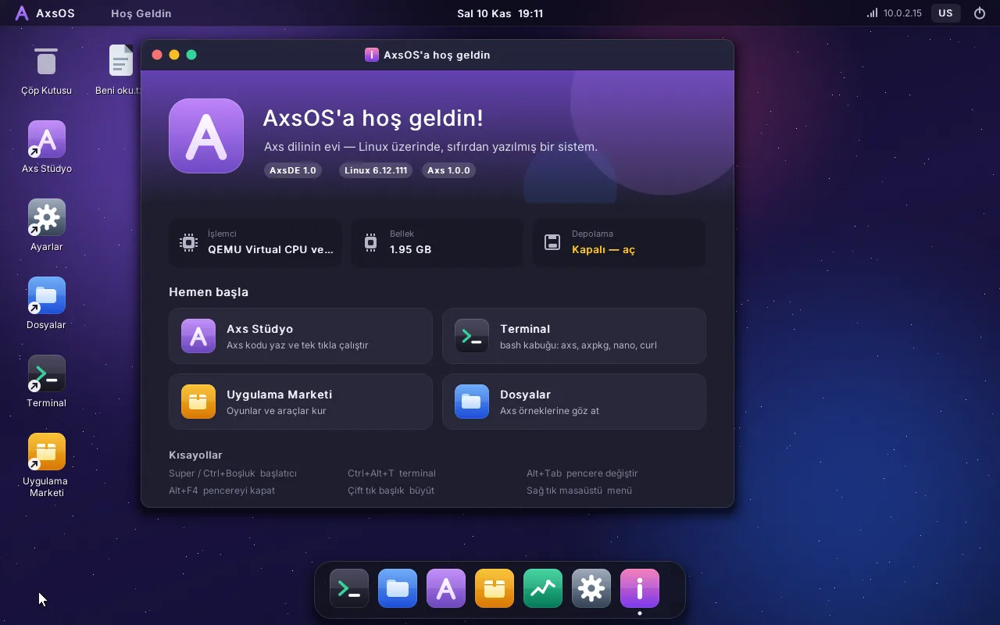
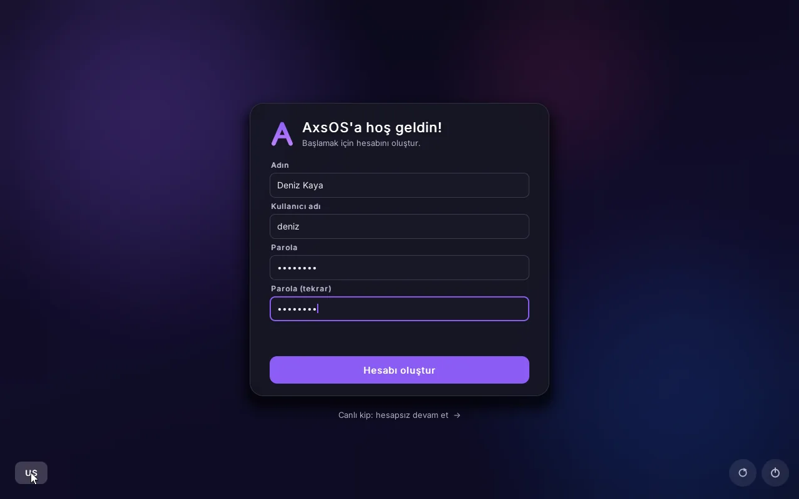
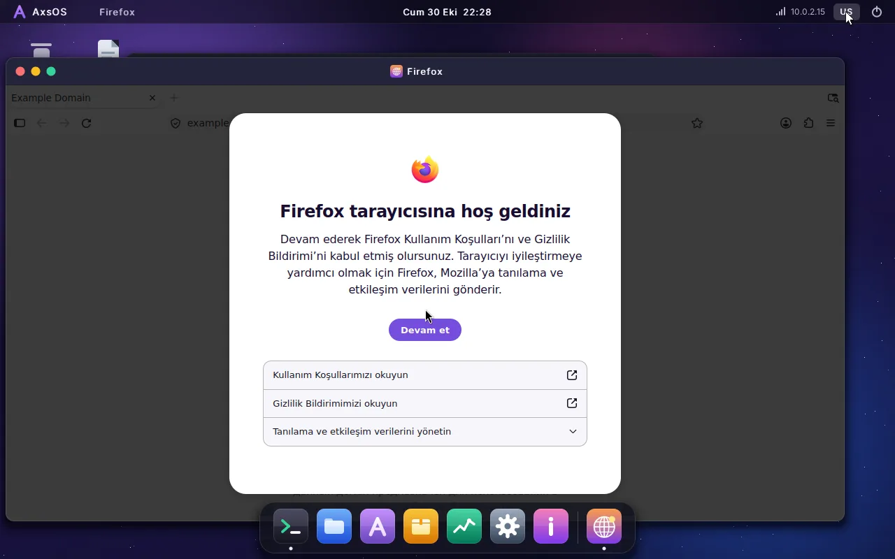
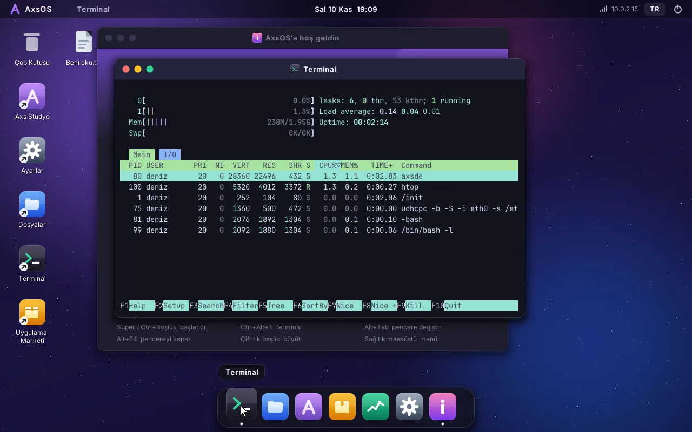

AxsOS; Linux çekirdeği üzerinde sıfırdan yazılmış masaüstü ortamı AxsDE, Türkçe programlama dili Axs ve kendi paket yöneticisi axpkg ile gelen, tamamen Türkçe bir işletim sistemi.

Tarayıcıda çalışan bir taklit değil: kendi çekirdeği, kendi açılışı, kendi masaüstüyle bilgisayarda ya da sanal makinede açılan bir işletim sistemi.
C ile yazılmış, ekrana doğrudan çizen masaüstü: yuvarlak köşeler, gölgeler, buzlu cam, dock, başlatıcı, bildirimler. Yazılımla çizimde bile akıcı.
Türkçe dostu, sade sözdizimli Axs dili kurulu gelir. Axs Stüdyo'da yaz, F5'e bas, çalışsın. use arayuz ile birkaç satırda pencereli program.
axpkg paket yöneticisi internetten paket indirir, sha256 ile doğrular, bağımlılıkları çözer. Oyunlar, araçlar ve tarayıcılar tek tıkla.
Gerçek ağ kartı sürücüleriyle internete bağlanır. Firefox ve Google Chrome resmi kaynaklarından indirilip AxsDE penceresinde çalışır.
WTA (Windows To AxsOS) ile .exe ve .msi dosyalarına çift tıkla: Wine 11 sayesinde 32 ve 64 bit Windows programları çalışır.
ISO'dan açılır; bir disk takılıysa kurduğun uygulamalar, dosyaların ve ayarların yeniden başlatınca yerinde durur. Tek tıkla fabrika ayarları.
İlk açılışta hesabını oluştur; sonra giriş ekranı, Super+L ile kilit. Parolalar SHA-512 ile saklanır.
Ctrl+C / Ctrl+V her yerde çalışır; sanal makinede ana bilgisayarınla pano ortaktır. Dışarıdan kodu yapıştır, çalıştır.
bash, gcc 13, make, binutils, vim, nano, htop, curl, Python 3.13 hazır gelir. Derlediğin program doğrudan çalışır.
Buradaki her görüntü AxsOS'un sanal makinede çalışırken alınmış gerçek ekranıdır; hiçbiri çizim ya da tasarım taslağı değil.

Axs, okunması kolay sözdizimiyle öğrenmesi hızlı bir programlama dili. AxsOS'ta Axs Stüdyo ile yazar, tek tuşla çalıştırırsın; çıktı hemen altta görünür.
use arayuz ile düğmeli, giriş kutulu pencereler# Axs Stüdyo'ya hoş geldin! ad = "AxsOS" print: Merhaba, ad;! func kare(x) return x * x end for i in [1, 2, 3, 4, 5] print: i; x i; = (kare(i)); end
Ağ kartın tanınır, adres DHCP ile alınır, saat eşitlenir. Uygulama Marketi'nden Firefox ya da Chrome'u kur: resmi siteden indirilip AxsOS penceresinde açılır.
~/İndirilenler klasörüne
Terminal; 256 renk, fareyle seçim, kopyala/yapıştır ve iş kontrolüyle GNU bash çalıştırır. gcc ile C derle, htop ile sistemi izle, axpkg ile paket kur.
axpkg install, search, upgrade
Bilgisayarına bir şey kurman gerekmez: ISO'yu sanal makinede aç ya da USB belleğe yazıp gerçek bilgisayarda başlat.
Son sürüm her güncellemede otomatik derlenir, test edilir ve yayınlanır.
axsos.iso · 81 MBQEMU, VirtualBox ya da VMware. Linux 64 bit seç, 2–4 GB bellek ver.
qemu-img create -f qcow2 veri.qcow2 20G qemu-system-x86_64 -m 4G -smp 2 \ -cdrom axsos.iso -boot d \ -drive file=veri.qcow2,if=virtio \ -nic user,model=e1000 \ -device virtio-tablet-pci
İlk açılışta adını ve parolanı gir, masaüstü açılsın. Disk taktıysan Ayarlar > Depolama'dan tek tıkla kalıcı yap.
# USB belleğe yazmak için (Linux) sudo dd if=axsos.iso of=/dev/sdX \ bs=4M status=progress # Windows: Rufus (DD kipi)
Açık kaynak. Kaynak kodunu incele, tek komutla kendin derle: ./build.sh